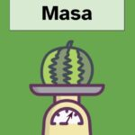
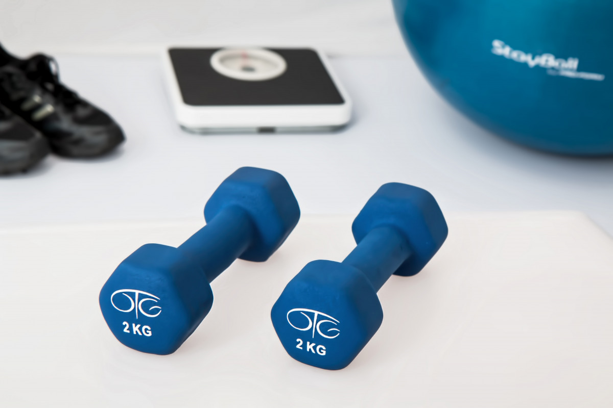
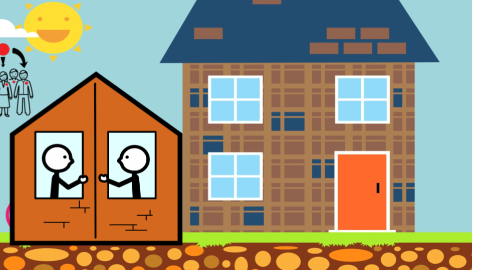

Diccionario lectura facilitada
Balance Energético
Definición: Es el equilibrio entre la energía que se consume y la que se gasta.
Ejemplo:Cuidaremos nuestra alimentación para tener un buen balance energético.
Circuito de actividades físicas
 Definición: Serie de ejercicios físicos organizados según un itinerario previsto.
Definición: Serie de ejercicios físicos organizados según un itinerario previsto.
Ejemplo: Preparamos un circuito de actividades para entrenar en clase de educación Física.
Croquis
 Definición: Dibujo esquemático y simple de un terreno, un edificio, un mapa o una localización.
Definición: Dibujo esquemático y simple de un terreno, un edificio, un mapa o una localización.
Ejemplo: Gracias al croquis que hicimos del parque de aventuras pudimos llegar a todas las atracciones.
Espacio
Definición: Capacidad de un terreno o lugar.
Ejemplo: Queda muy poco espacio para colocar el muebles.
Gasto calorico
 Definición: Relación entre la energía que consumes y la que necesita tu cuerpo.
Definición: Relación entre la energía que consumes y la que necesita tu cuerpo.
Ejemplo: Si corremos todos los días, tendremos más gasto calórico.
Localidad
 Definición: Lugar o pueblo.
Definición: Lugar o pueblo.
Ejemplo: Mis abuelos son de una localidad pequeña.
Masa
Definición: Magnitud que expresa la cantidad de materia de un cuerpo..
Ejemplo: El frutero usó una balanza para medir la masa de la sandía.
Metabolismo basal
Definición: Energía que necesita nuestro cuerpo estando en reposo.
Ejemplo: El metabolismo basal es muy importante para nuestra salud.
Longitud
 Definición: Magnitud que mide la distancia entre dos puntos.
Definición: Magnitud que mide la distancia entre dos puntos.
Ejemplo: En clase medimos la longitud de nuestros lápices con una regla.
Panel
 Definición: Especie de cartelera, tablero, de grandes dimensiones que sirve como publicidad, información, itinerarios, etc.
Definición: Especie de cartelera, tablero, de grandes dimensiones que sirve como publicidad, información, itinerarios, etc.
Ejemplo: Vimos la información de la película en el panel.
Peso
Definición: Fuerza que la Tierra ejerce sobre una masa.
Ejemplo: No pudimos con el piano debido a su peso.
Tiempo
Definición: Magnitud física con la que se mide la duración o separación de acontecimientos.
Ejemplo: Tendremos tiempo para jugar más tarde.
Vecindario
Definición: Conjunto de los vecinos de un mismo edificio, barrio o municipio.
Ejemplo: Buscamos a mi gato por todo el vecindario.
Web
 Definición: documento electrónico que contiene información a través de internet.
Definición: documento electrónico que contiene información a través de internet.
Ejemplo: Buscamos información para el trabajo de matemáticas en la web.
Yincana
 Definición: Juego de competición en equipo en el que los participantes superaran una serie de pruebas.
Definición: Juego de competición en equipo en el que los participantes superaran una serie de pruebas.
Ejemplo: La yincana matemática fue muy divertida.